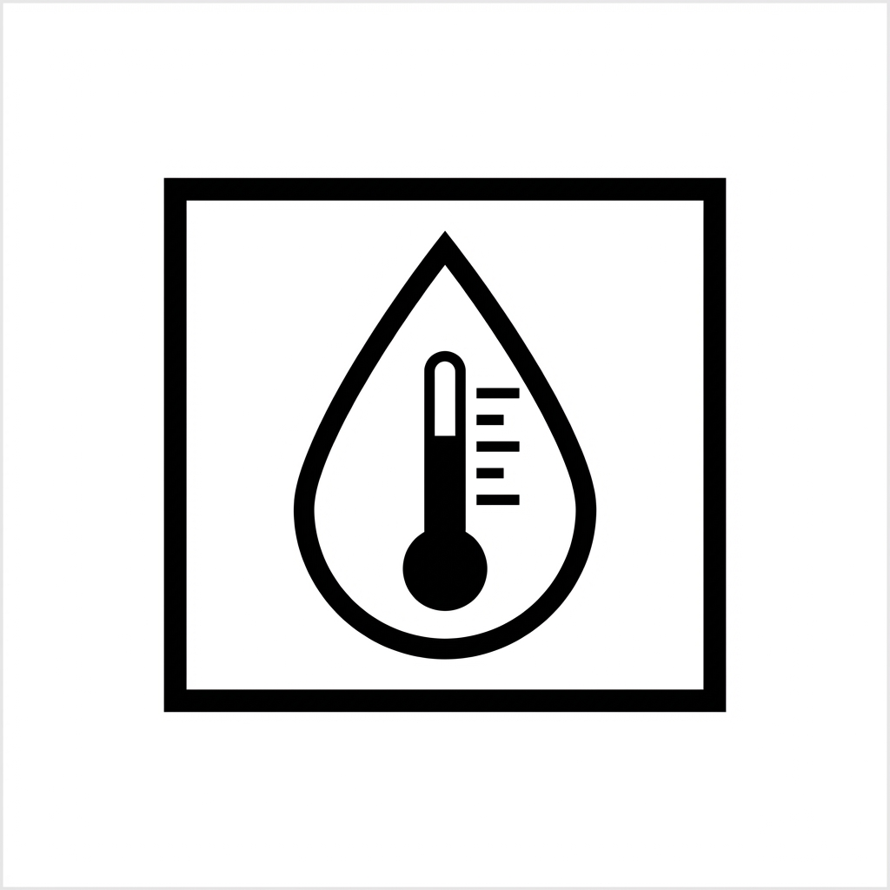

Simject Instructions for Use (IFU)
|
Logan Zhao
R&D Department
Prepared by
2025.11.17
|
Kevin Lo
R&D Department
Reviewed by
2025.12.31
|
Kevin Lo
R&D Department
Approved by
2025.12.31
|
Change History
| No. | Version | Effective Date | Prepared by | Change Description |
|---|---|---|---|---|
| 1 | 1.0 | 2025.12.31 | Logan Zhao | Initial version |
1. Product Introduction
| Product Name: | Auto-Injector | ||
| Trade Name: | Simject | ||
| Product Model: | SM-AISI104 | ||
| Product Dimensions: | 21.2 mm × 21.8 mm × 165 mm | ||
| Drug Concentration: | 0.3 mg/0.3 mL | ||
2. Registration Information
| Registrant Name: | Zhejiang Summed Medtech Co., Ltd. | ||
| Registrant Address: | 5th Floor, Building 8, No. 313 Lingxiu Road, Luoxing Street, Jiashan County, Jiaxing City, Zhejiang Province | ||
| Contact Phone: | 0573-84012811 | ||
| After-Sales Service Unit: | Zhejiang Summed Medtech Co., Ltd. | ||
3. Manufacturer Information
| Manufacturer: | Zhejiang Summed Medtech Co., Ltd. | ||
| Production Address: | 5th Floor, Building 8, No. 313 Lingxiu Road, Luoxing Street, Jiashan County, Jiaxing City, Zhejiang Province | ||
| Medical Device Production License No.: | |||
| Contact Phone: | 0573-84012811 | ||
| Company Website: | www-summed-medtech.com | ||
4. Registration Certificate Information
| Medical Device Registration Certificate No.: | Zhejiang Instrument Registration Approval No. ×××××× | ||
5. Product Technical Requirements Information
| Product Technical Requirements No.: | ×××××× | ||
6. Product Performance, Structure, and Intended Use
Product Performance
PFS filled with 1 ± 0.03 mL, single injection dose of 0.27 mL ~ 0.34 mL
Main Structure Composition
Simject Auto-Injector consists of the following components:
- Front Component
- Rear Component
- Pre-Filled Syringe (PFS)
- Needle Shield
- Cap
Intended Use
The Simject Epinephrine Auto-Injector is used for emergency allergic reactions (such as anaphylactic shock, asthma), cardiac arrest, and other emergencies.
Designed for use with Epinephrine (pre-filled 0.3 mL) for drug delivery (intramuscular injection). For single patient or individual single use only.
7. Contraindications, Warnings, and Precautions

Figure 6-1: Major Warnings and Precautions
1. Contraindications
- Patients with severe allergy history to Epinephrine or product excipients, non-anaphylactic shock patients (such as cardiogenic shock, septic shock) are prohibited from use.
- Intravenous injection is prohibited. This product is designed specifically for intramuscular injection.
- Due to the potent pressor effect of Epinephrine, patients with hypertensive crisis, uncontrolled symptomatic arrhythmias, and organic brain injury are generally prohibited from use.
2. Precautions, Warnings, and Tips
• Precautions
Patients with cardiovascular disease, cerebrovascular disease, metabolic diseases, nervous system diseases, or taking specific medications (β-blockers, monoamine oxidase inhibitors, tricyclic antidepressants, digitalis drugs, etc.) should use with caution.
Patients with hearing or visual impairments, or manual dexterity limitations (such as Parkinson's disease patients) require assistance from medical personnel or personnel trained in use.
• Intended User Population
Patients requiring intramuscular drug injection (minors and adults). Users should have normal vision and hearing, be able to read and understand the instructions, and be able to use the product correctly after training. Adults should use this product under doctor's guidance. Do not use without training. Minors should use under the supervision of guardians and doctors. Do not use independently.
• Potential Safety Hazards and Use Limitations
If the following guidelines are not followed, risks may include incorrect injection, disease cross-transmission, or infection. If any of these situations occur, seek immediate medical assistance.
Please follow the product instructions and use this product only after consulting with your doctor and/or professional medical personnel.
Minors should use under the supervision of guardians and doctors. Do not use independently.
Blind or visually impaired patients must use this product with the assistance of specially trained personnel. Patients with hearing or tactile impairments should consult a doctor before use.
Keep the product properly stored and out of reach of children or other personnel unfamiliar with correct usage.
After injection is complete, dispose of the product according to local medical device waste disposal regulations.
Warnings (Ensure Proper Application)
- This product is only for specified emergency items. Any changes must be approved by your treating physician.
- Before each injection, confirm the PFS stopper position in your injection pen and ensure the pen is intact and matches the manufacturer's product description.
- Follow your doctor and/or professional medical personnel's guidance and inject at the appropriate site.
- Avoid placing the product in extreme temperature environments, including high temperature, low temperature, direct sunlight, etc.
- Avoid dropping the product or contacting hard objects. Do not immerse the product in water or any liquid.
3. Usage Instructions
- Read the instructions carefully before using Simject. If you have any questions, please contact Jiaxing Summed Medtech Co., Ltd. Improper use of the product according to these instructions may result in injury.
- These instructions cover the product's intended use, how to use the product correctly, and troubleshooting methods, but do not provide any treatment plans and recommendations.
- The product's intended use locations are medical facilities and homes. Do not use without training.
- This product is compatible with 1.0 mL drug pre-filled PFS (with 22G 5/8" needle).
- This product is a fixed-dose disposable auto-injector. All components do not contact the drug solution. For single patient single use only.
- Minors should use under the supervision of guardians and doctors. Do not use independently.
- This product should be stored out of reach of children.
- Keep the product dry. Do not allow water or other liquids to enter the product interior.
- The Simject Epinephrine Auto-Injector is a precision medical device. Avoid storage or use in harsh environments such as high temperature, extreme low temperature, humidity, dust, etc. Avoid dropping and strong impacts to prevent device damage.
- The manufacturer is not responsible for product failure caused by human factors, external forces, or uncontrollable factors.
8. Installation and Usage Instructions
Injection Flow Diagram

Figure 8-1: Injection Flow Diagram
Begin Injection
Step 1
- Remove the cap and confirm that the cap has pulled out the needle shield (Figure 1).
- Check the medication appearance through the viewing window. Do not use if the medication has deteriorated.
Step 2
Place vertically at the injection site (Figure 2).
Injection Complete
Step 3
Press vertically on the pen barrel. You will hear the injection start prompt sound. After hearing the injection completion prompt sound, stay for 5-10 seconds to allow full absorption of the injected drug (Figure 3).
Step 4
After injection is complete, dispose of the product according to local medical device waste disposal regulations.
Remember to call 120 and emphasize anaphylactic shock!
Disinfect the injection site before injection.
9. Product Maintenance and Storage Conditions

Figure 8-1: How to Use Instructions
- Avoid direct sunlight or sudden temperature changes during storage and transportation.
- Do not immerse this product in water, as it will cause product damage.
- Store this product carefully. Prevent water, dust, and moisture from entering.
- Transport and storage should avoid direct sunlight. Keep away from heat sources. Do not freeze.
- Do not use harsh chemicals, detergents, or strong detergents to clean the injection assist device and its accessories.
- Do not steam sterilize or autoclave the injection assist device and its accessories.
- For exterior cleaning, use a dry, clean, soft cloth, or use a dry cloth with a small amount of medical alcohol to wipe gently. Avoid allowing alcohol to drip or flow into the injection assist device.
- Do not subject the auto-injector and its accessories to strong impact or vibration to avoid damaging the housing and internal components.
- Do not disassemble the injection assist device and its internal components without authorization. Otherwise, this device will not be within the scope of our company's warranty.
- Store auto-injectors out of reach of children.
- Waste auto-injectors and packaging materials may cause environmental pollution. Please recycle according to relevant regulations.
- When flying, carry the product with you. Do not check it in luggage.
- Auto-injectors should be stored in a cool, dry place, temperature range -20°C ~ 55°C (without medication), relative humidity 20% ~ 90%, atmospheric pressure 70 kPa ~ 106 kPa, and transported under the same conditions.
10. Product Service Life
Under normal use, the validity period is 2.5 years, calculated from the production date.
11. Common Problems and Solutions
When the injection pen exhibits any abnormal phenomena, please first refer to the following table and follow the instructions.
If the following solutions cannot resolve your issue, please contact the distributor or manufacturer in time for consultation.
| Phenomenon Description | Solution |
|---|---|
| Unable to activate | Please replace with a new Epinephrine Auto-Injector. |
| Not fully locked | Gently pull the needle cap. The needle cap spring drives the needle cap to complete locking. |
| Small amount of drug leakage from needle tip after injection | A small amount of drug leakage from the needle tip after injection is normal. No special treatment is needed. This situation does not affect the injected drug dose. |
12. Technical Information
| No. | Item | Technical Information |
|---|---|---|
| 1 | Product Name | Simject Epinephrine Auto-Injector |
| 2 | Waterproof Rating | IPX0 |
| 3 | Use Environment | Ambient temperature: -20°C ~ 55°C, relative humidity: 20% ~ 90%, atmospheric pressure: 70.0 kPa ~ 106.0 kPa |
| 4 | Theoretical Injection Dose | 0.3 mL |
| 5 | Injection Dose Range | 0.27 mL ~ 0.34 mL |
| 6 | Injection Time | ≤ 2 s (excluding dwell time) |
| 7 | Injection Activation Force | 5 N ~ 25 N |
13. Graphic Symbols, Abbreviations Explanation
| Symbol | Meaning | Condition | Specification |
|---|---|---|---|
 |
Rain protection (Keep Dry) | - | Transport/Storage |
 |
Sun protection (Keep away from sunlight) | - | Transport/Storage |
 |
Temperature limit | -20°C ~ 55°C | Transport/Storage |
|  | Humidity protection | 20% ~ 90% | Transport/Storage |
 |
Atmospheric pressure limit | 70 kPa ~ 106 kPa | Transport/Storage |
14. Instruction Preparation Date
November 17, 2025